Autonomous swarm interception for safer, more secure airspace.
T. Interceptor CS is an autonomous interception drone system developed to protect sensitive sites, key facilities, and controlled airspace from illegal drone intrusion. Working in combination with Tron Future's radar, the system detects aerial threats in real time and automatically dispatches interceptor units to respond. With AI-powered autonomy and swarm-based teamwork, the drones coordinate in flight to track and intercept unauthorized targets with speed, precision, and flexibility. The result is a scalable aerial defense solution that reduces response time, lowers operator workload, and strengthens overall site security.
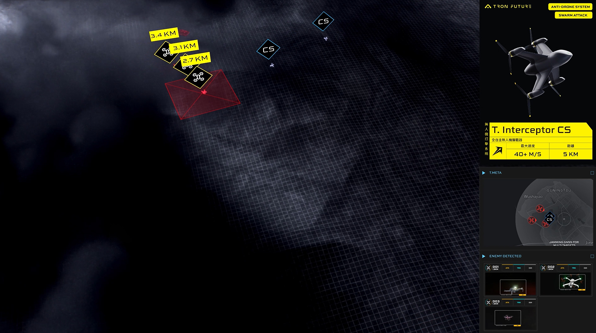
Coordinated swarm defense — autonomous, scalable, relentless.
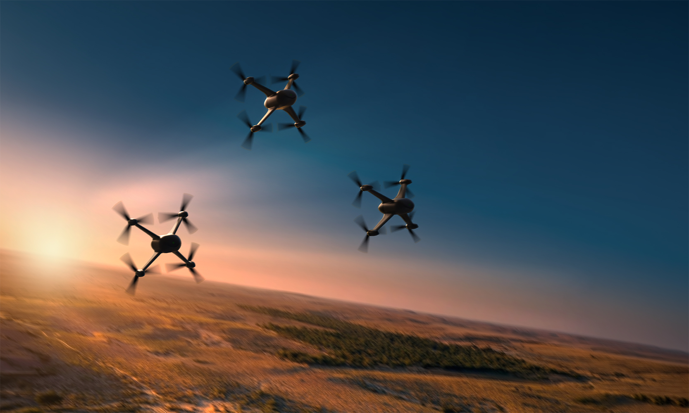
The system reduces the need for on-site personnel using handheld counter-drone equipment. T. Interceptor CS autonomously coordinates detection, tracking, and interception, while net-based capture helps minimize collateral impact on the surrounding environment.
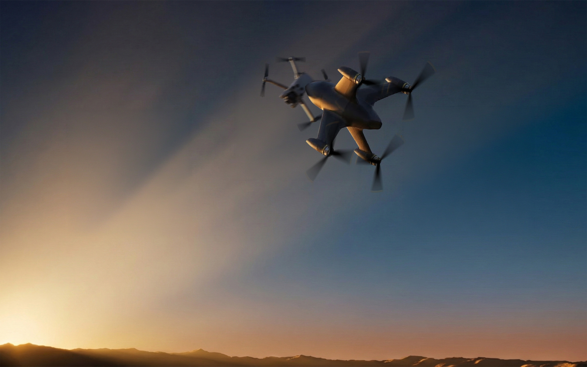
Engineered for coordinated interception, T. Interceptor CS operates as part of an intelligent swarm — multiple units working in concert to surround, track, and neutralize unauthorized targets. The system's strength lies not in a single unit's power, but in the collective precision of the group.
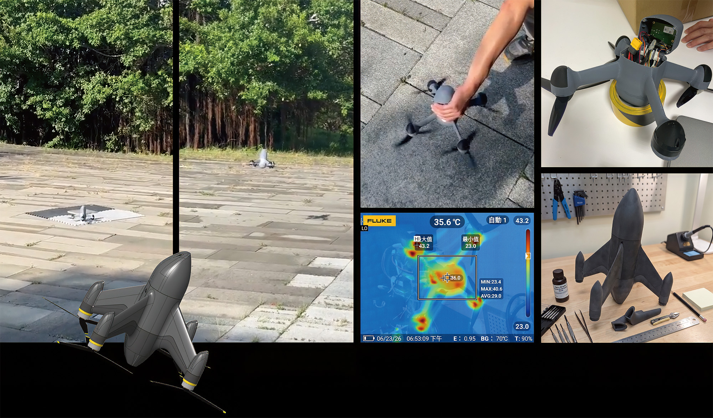
From controlled indoor environments to open-field scenarios, each flight test validates the system's autonomous detection and tracking function. Iterative testing under real-world conditions ensures reliability across diverse operational environments — refining flight dynamics, sensor accuracy, and structural durability before deployment.
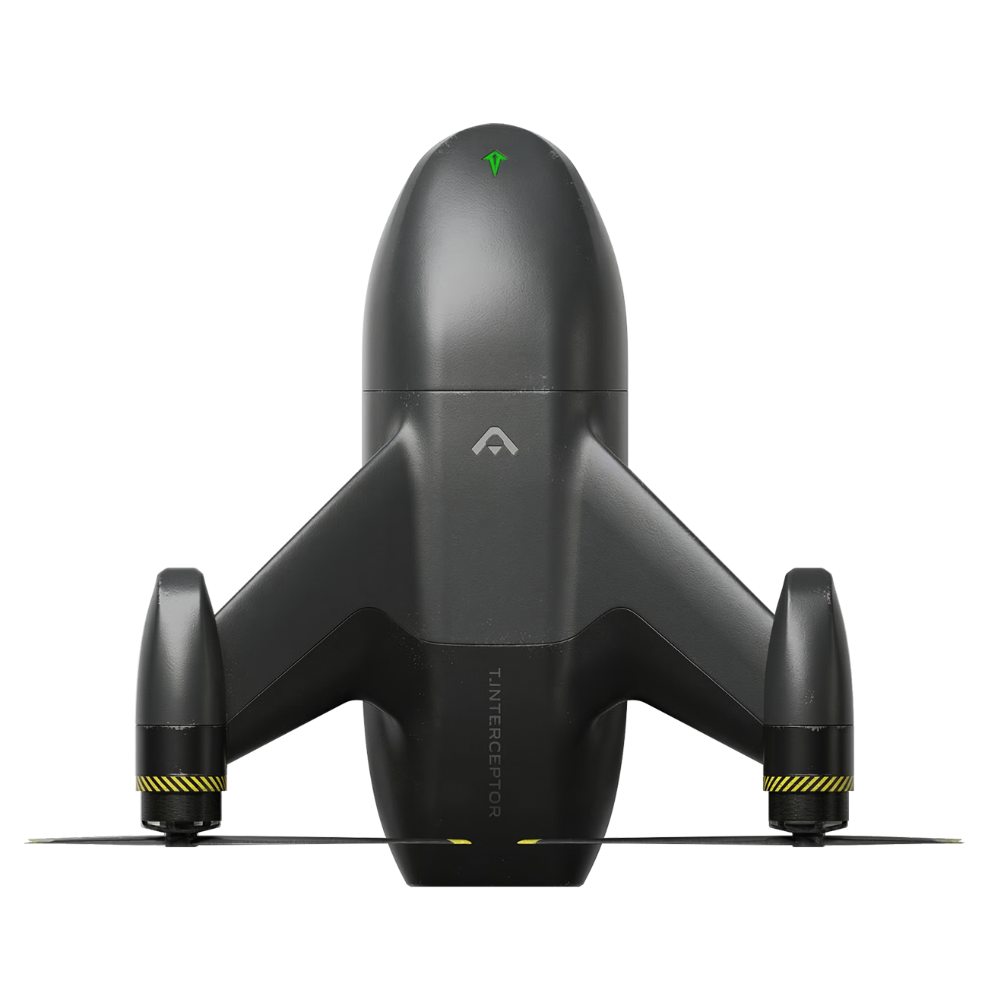
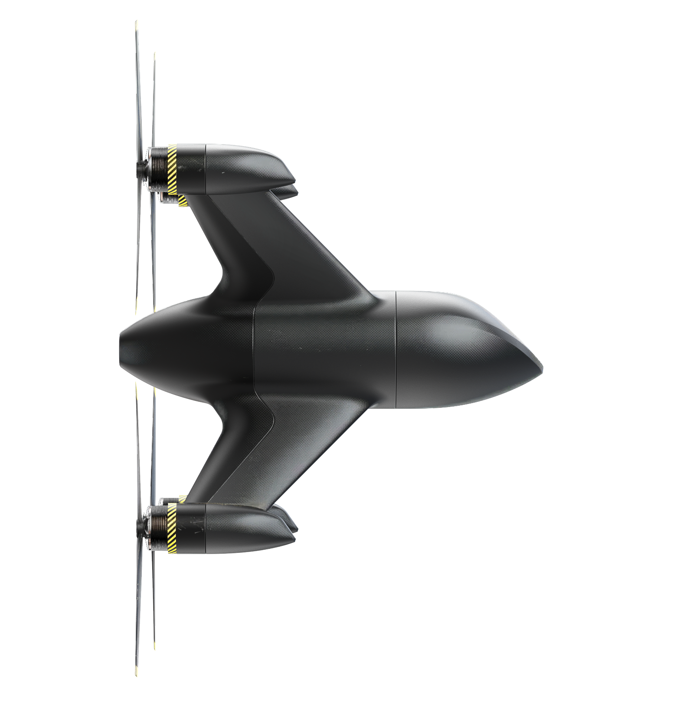
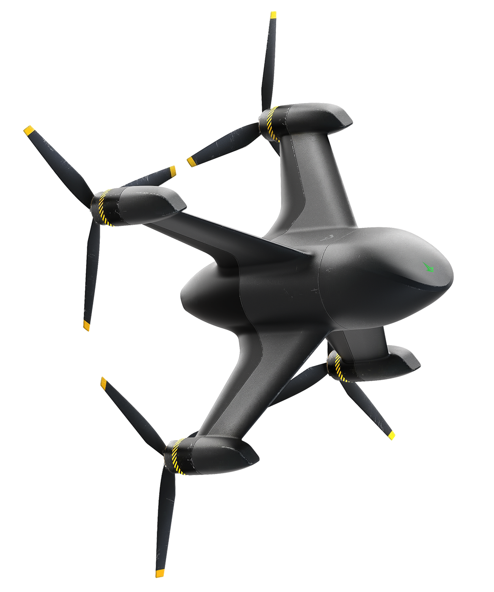
Designed for rapid deployment and tight-formation flight, T. Interceptor CS prioritizes a compact, stackable form factor. The streamlined body reduces aerodynamic interference between units during swarm operations, while the angular profile projects a sharp, assertive presence that distinguishes it from commercial-grade platforms.
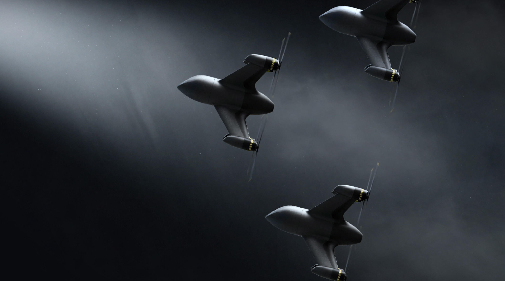
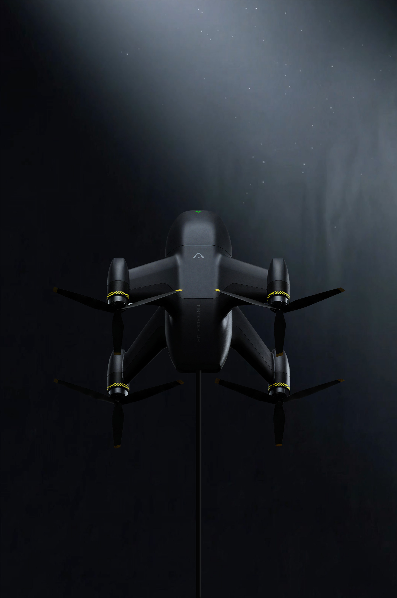
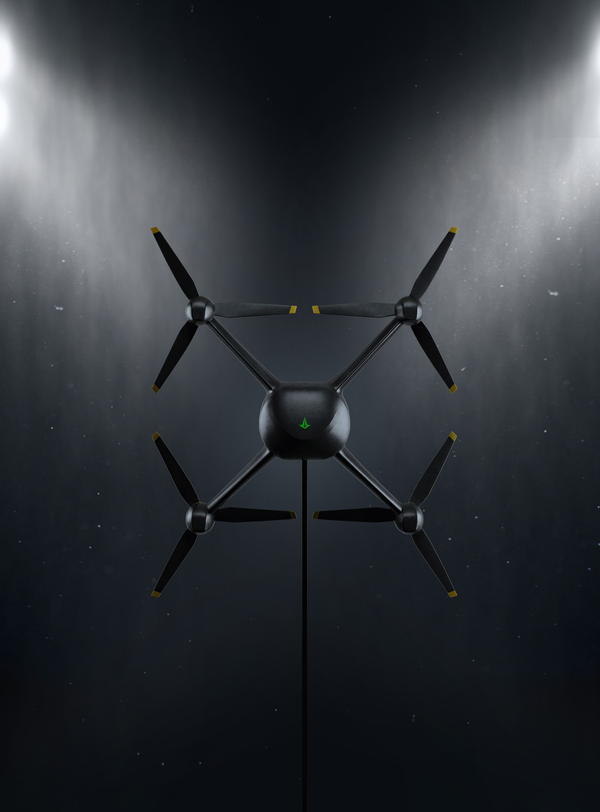
2025 Taipei Aerospace & Defense Technology Exhibition
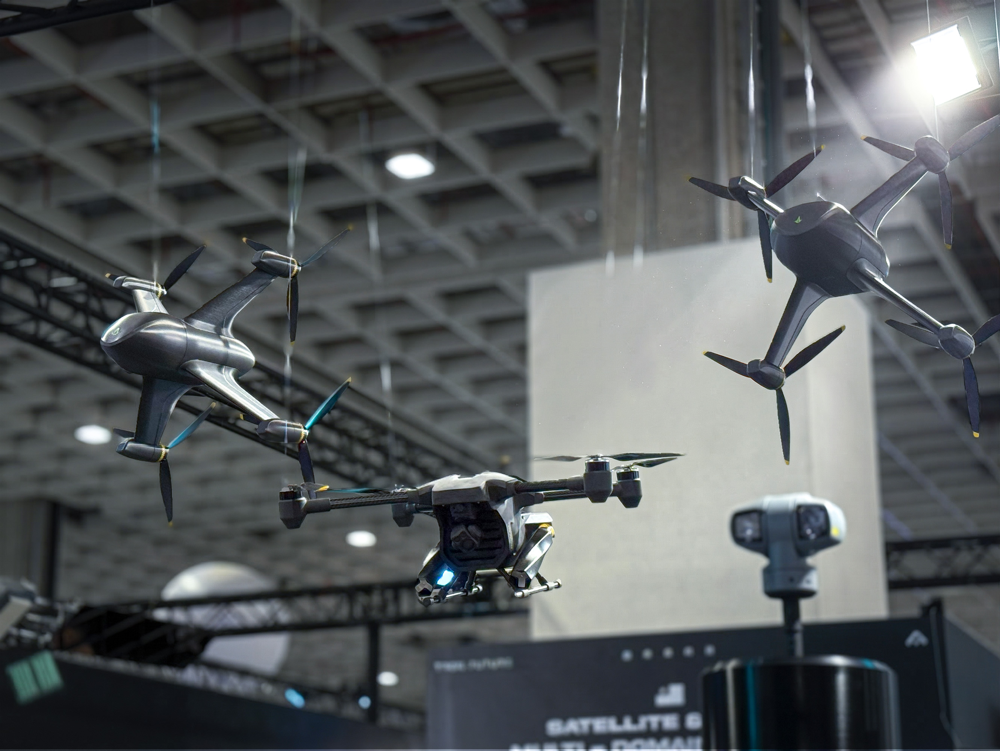
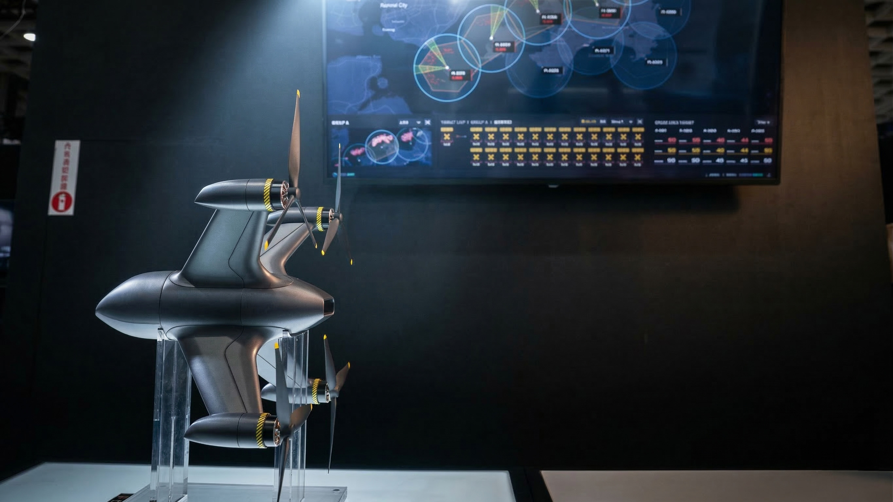
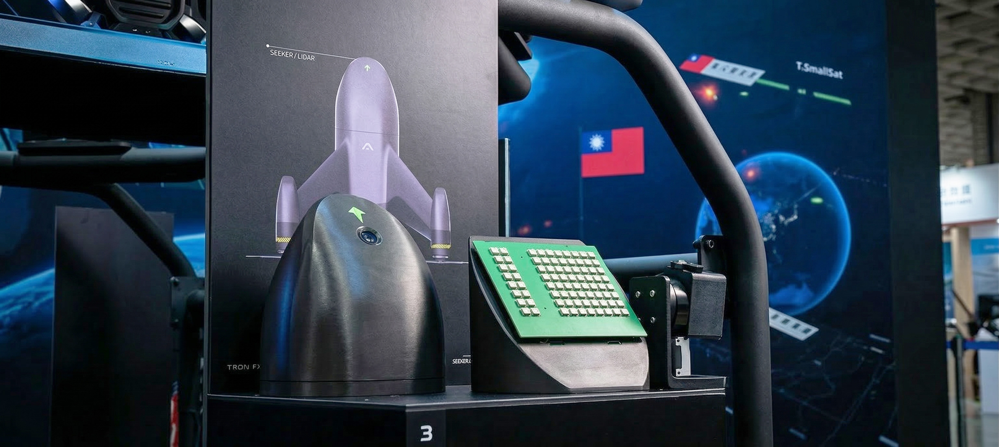